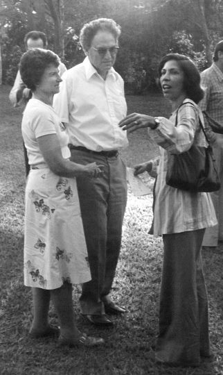

Yvonne nasceu 1931, em Pederneiras, interior do estado de São Paulo. Aos dez anos, mudou-se para o Rio de Janeiro, onde cursou o ensino médio no Colégio Mello e Souza.
Em 1953, graduou-se em Química pela Faculdade Nacional de Filosofia da Universidade do Brasil (hoje a Universidade Federal do Rio de Janeiro). No ano seguinte, obteve o título de bacharel em Física pela Universidade do Estado da Guanabara (hoje a Universidade do Estado do Rio de Janeiro).
Em 1956, foi contratada como professora assistente pela Escola de Engenharia de São Carlos, na época única unidade da Universidade de São Paulo na cidade.